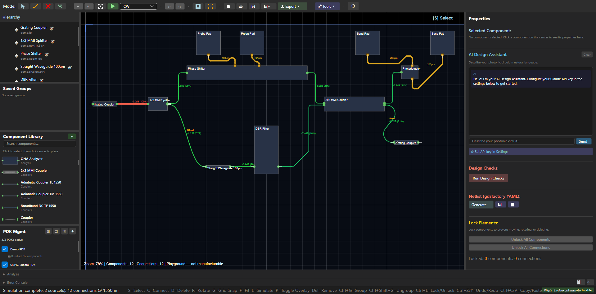
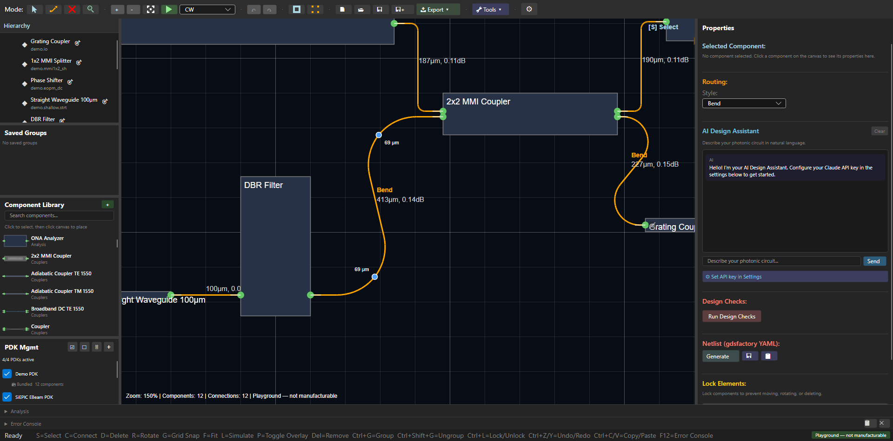
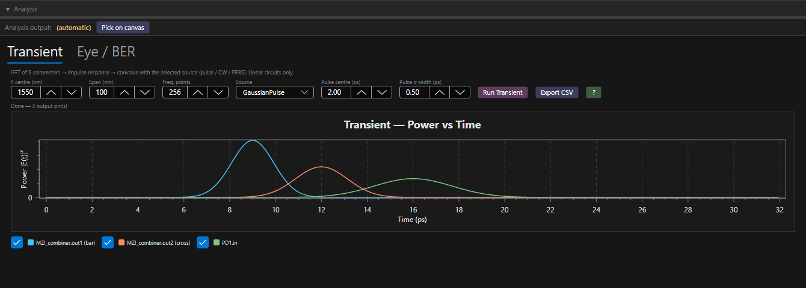
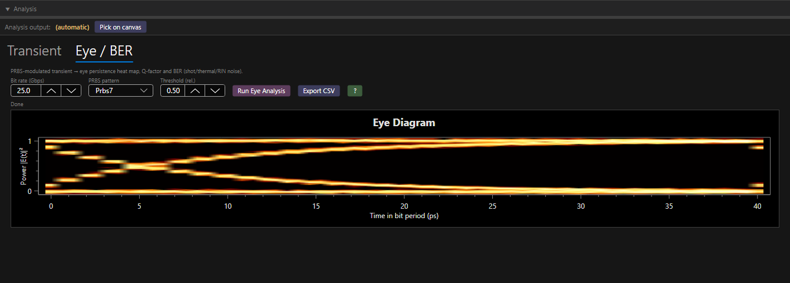
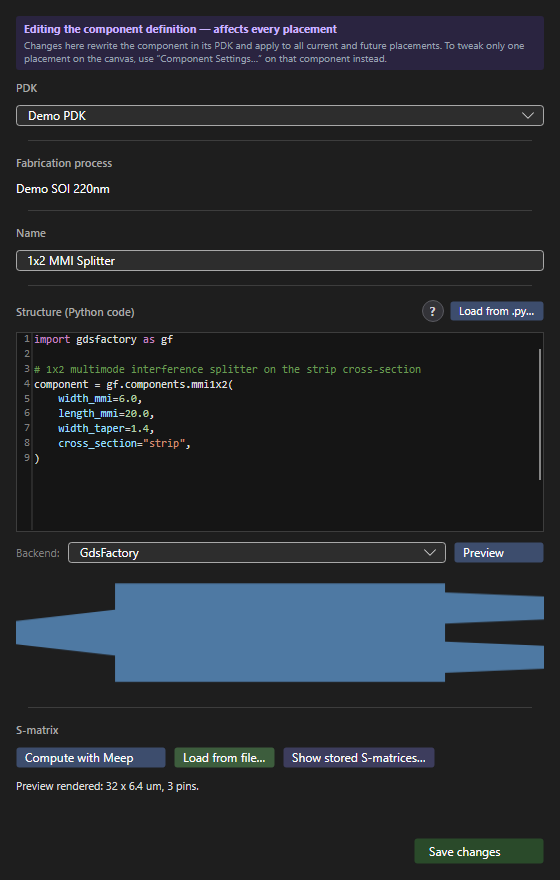
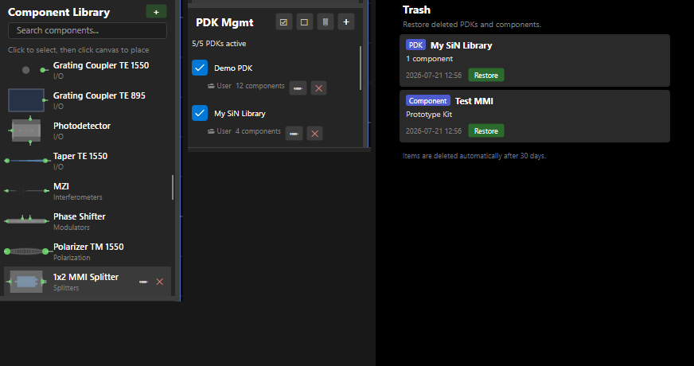
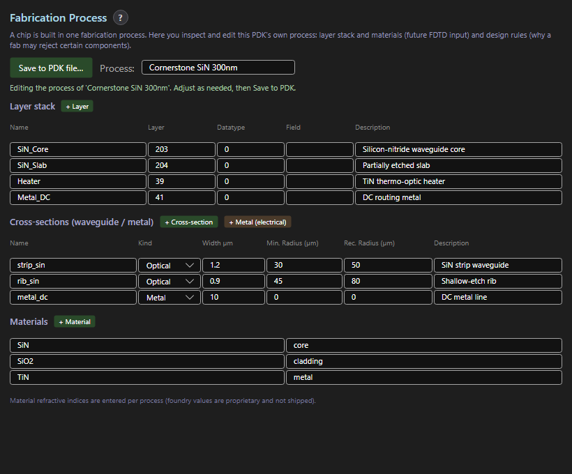
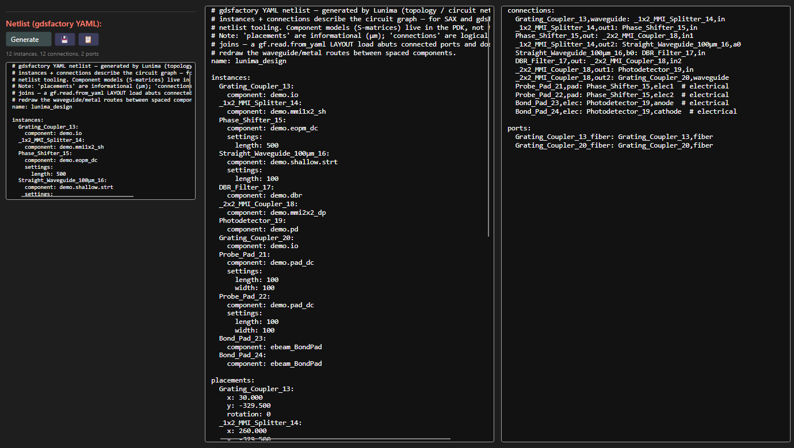
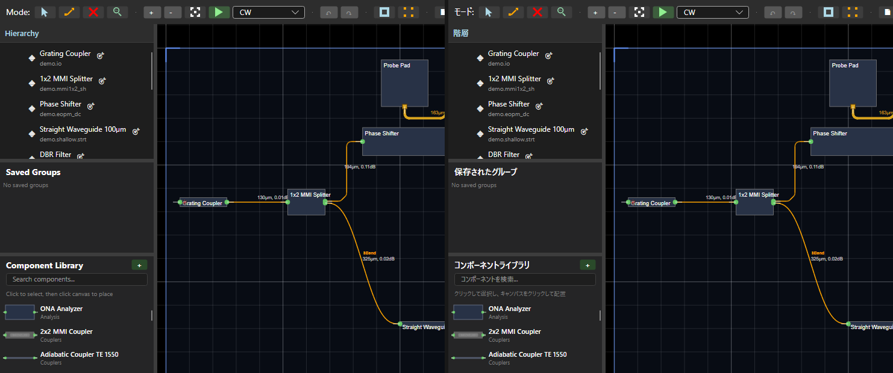

Open-source photonic IC design · λ = 1550 nm
Draw the chip.
Watch the light.
Lunima is a free, open-source design tool for photonic integrated circuits. Route waveguides the way you'd edit vectors in Figma, watch simulated power flow live on the canvas, bring your own PDK — and take everything with you in open formats.
Windows · Linux · macOS — MIT licensed

If you route by hand
Routing that answers to you
Click a connection and it becomes geometry you can grab: in-canvas bend-radius handles, live length and loss on every segment, exact numbers everywhere. The router suggests — it never overwrites what you set.
- Per-connection styles — SBend, Bend, custom radii; freeze routes you've tuned.
- Process-aware — routing honors your process's minimum bend radius; handles clamp to it.
- Diagonal 45° routingopt-in beta — denser layouts; still slow on large designs.
- Auto crossing insertionopt-in — a real PDK crossing component, only where you allow it.
- Metal routing — wire DC probe and bond pads next to the optical layer.

If you simulate — and then measure
Simulation lives on the canvas
Run CW and read power straight off the waveguides. Go time-domain when you need it. And when your devices come back from the fab, load the measured S-matrices onto the very components you drew.
- Transient — IFFT of the circuit S-parameters with pulse, CW or PRBS sources; a sample-mode driver runs active, time-dependent compact models.
- Eye / BER — PRBS eye-persistence heat maps with Q-factor and BER (shot/thermal/RIN noise), plus CSV export.
- ONA sweeps — transmission over wavelength via the Optical Network Analyzer component.
- FDTD with Meep — recompute a component's S-matrix from its geometry in Docker, with a guided setup dialog.
- Measured data in — load S-matrices from file; probe waveguide modes and fiber overlap right on the canvas.


If you run your own fab
Your PDK is a first-class citizen
Custom PDKs aren't an expert backdoor. Define components in gdsfactory or nazca Python, preview the geometry, compute the S-matrix with Meep — and keep your process data (it's entered per process, never shipped).
- One editor for everything — code, geometry preview and S-matrix side by side.
- Fork-on-save — editing a bundled component forks it into your PDK, shadowing the original; restore it any time.
- Trash, not dread — deleted PDKs and components restore for 30 days.
- Process editor — layer stack, cross-sections with min/recommended bend radii the router enforces, and your own refractive indices.
- Design checks — validate against the process, with layer-divergence warnings.



If you don't trust black boxes
Open by design
Every stage has an escape hatch. Your circuit is a graph you can export, your PDK is JSON you can diff, and nothing in the pipeline requires you to stay.
- gdsfactory YAML netlists — instances with settings, placements, logical connections (metal traces marked
# electrical) and exposed ports — ready for SAX and any gdsfactory flow. - Open JSON PDKs — documented, human-readable, version-controllable.
- GDS export — through nazca, into your fabrication pipeline.
- Autorouting is optional — style it, freeze it, or route yourself; your edits are never overwritten.
- AI design assistant — describe a circuit in natural language, with your own Claude API key.

Five languages, one canvas
English · Deutsch · Español · 简体中文 · 日本語
Auto-detected from your system and live-switchable — every toolbar, panel and canvas HUD string re-reads instantly, no restart.

Get Lunima
Download v0.12.0
Free and MIT-licensed. Once installed, Lunima updates itself in place — download, swap, relaunch — on all three platforms.
Windows
x64
Lunima-Setup-0.12.0.msi Lunima-0.12.0-win-x64.zipInstaller, or portable zip — unzip and run.
macOS
Apple Silicon · Intel
Lunima-0.12.0-osx-arm64.dmg Lunima-0.12.0-osx-x64.dmgUnsigned build — see the first-launch note below.
macOS first launch: xattr -dr com.apple.quarantine /Applications/Lunima.app
All versions: github.com/aignermax/Lunima/releases